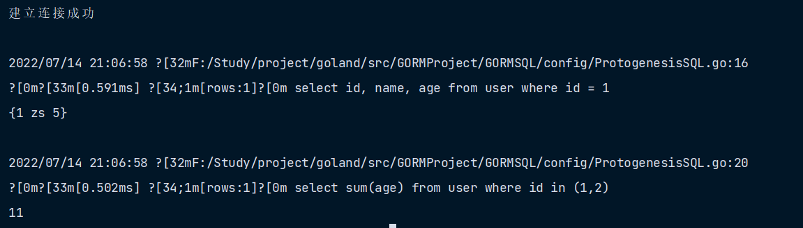
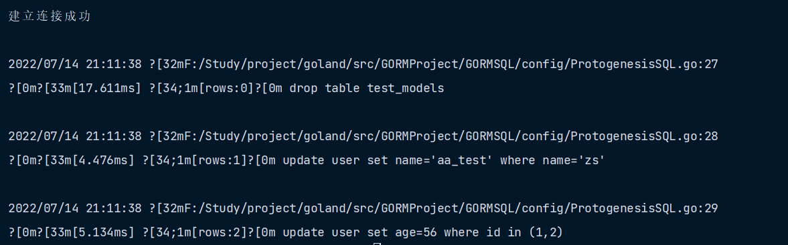
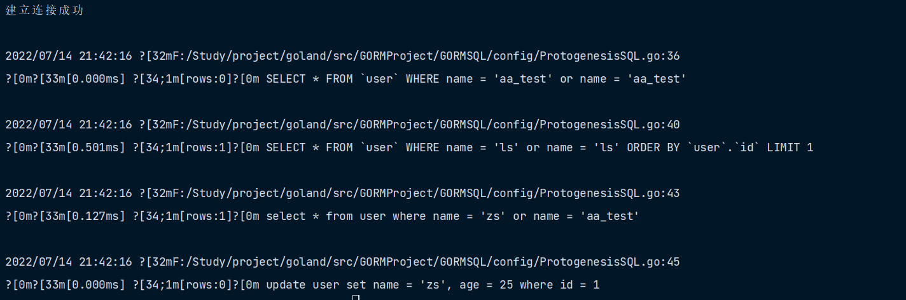

1. 原生查询 SQL 和 Scan
func QueryData1(db *gorm.DB) {
var result Result
db.Raw("select id, name, age from user where id = ?", 1).Scan(&result)
fmt.Println(result)
var age int
db.Raw("select sum(age) from user where id in (?)", []int{1, 2}).Scan(&age)
fmt.Println(age)
}

Exec 原生 SQL
db.Exec("DROP TABLE users")
db.Exec("UPDATE orders SET shipped_at=? WHERE id IN ?", time.Now(), []int64{1,2,3})
// Exec SQL 表达式
db.Exec("update users set money=? where name = ?", gorm.Expr("money * ? + ?", 10000, 1), "jinzhu")
注意 GORM 允许缓存预编译 SQL 语句来提高性能，查看 性能 获取详情

2. 命名参数
GORM 支持 sql.NamedArg、map[string]interface{}{} 或 struct 形式的命名参数，例如：
func QueryData3(db *gorm.DB) {
var user []User
db.Where("name = @name or name = @name", sql.Named("name", "aa_test")).Find(&user)
db.Where("name = @name or name = @name", map[string]interface{}{
"name": "ls",
}).First(&User{})
// 原生 SQL 及命名参数
db.Raw("select * from user where name = @name or name = @name2", sql.Named("name", "zs"), sql.Named("name2", "aa_test")).Find(&[]UserInfo{})
db.Exec("update user set name = @name, age = @age where id = 1", sql.Named("name", "zs"), sql.Named("age", 25))
db.Raw("select * from user where (name = @name and age = @age)", map[string]interface{}{
"name": "zs",
"age": 66,
})
type UserTest struct {
Name string
Age int
}
db.Raw("select * from user where (name = @Name AND age = @age)", UserTest{Name: "zs", Age: 55})
}

3. DryRun 模式
在不执行的情况下生成 SQL ，可以用于准备或测试生成的 SQL，详情请参考 Session
stmt := db.Session(&Session{DryRun: true}).First(&user, 1).Statement
stmt.SQL.String() //=> SELECT * FROM `users` WHERE `id` = $1 ORDER BY `id`
stmt.Vars //=> []interface{}{1}
4. Row & Rows
获取 *sql.Row 结果
// 使用 GORM API 构建 SQL
row := db.Table("users").Where("name = ?", "jinzhu").Select("name", "age").Row()
row.Scan(&name, &age)
// 使用原生 SQL
row := db.Raw("select name, age, email from users where name = ?", "jinzhu").Row()
row.Scan(&name, &age, &email)
获取 *sql.Rows 结果
// 使用 GORM API 构建 SQL
rows, err := db.Model(&User{}).Where("name = ?", "jinzhu").Select("name, age, email").Rows()
defer rows.Close()
for rows.Next() {
rows.Scan(&name, &age, &email)
// 业务逻辑...
}
// 原生 SQL
rows, err := db.Raw("select name, age, email from users where name = ?", "jinzhu").Rows()
defer rows.Close()
for rows.Next() {
rows.Scan(&name, &age, &email)
// 业务逻辑...
}
转到 FindInBatches 获取如何在批量中查询和处理记录的信息， 转到 Group 条件 获取如何构建复杂 SQL 查询的信息
5. 将 sql.Rows 扫描至 model
使用 ScanRows 将一行记录扫描至 struct，例如：
rows, err := db.Model(&User{}).Where("name = ?", "jinzhu").Select("name, age, email").Rows() // (*sql.Rows, error)
defer rows.Close()
var user User
for rows.Next() {
// ScanRows 将一行扫描至 user
db.ScanRows(rows, &user)
// 业务逻辑...
}
6. 高级
6.1. 子句（Clause）
GORM 内部使用 SQL builder 生成 SQL。对于每个操作，GORM 都会创建一个 *gorm.Statement 对象，所有的 GORM API 都是在为 statement 添加 / 修改 Clause，最后，GORM 会根据这些 Clause 生成 SQL
例如，当通过 First 进行查询时，它会在 Statement 中添加以下 Clause
clause.Select{Columns: "*"}
clause.From{Tables: clause.CurrentTable}
clause.Limit{Limit: 1}
clause.OrderByColumn{
Column: clause.Column{Table: clause.CurrentTable, Name: clause.PrimaryKey},
}
然后 GORM 在 Query callback 中构建最终的查询 SQL，像这样：
Statement.Build("SELECT", "FROM", "WHERE", "GROUP BY", "ORDER BY", "LIMIT", "FOR")
生成 SQL：
SELECT * FROM `users` ORDER BY `users`.`id` LIMIT 1
您可以自定义 Clause 并与 GORM 一起使用，这需要实现 Interface 接口
可以参考 示例
6.2. 子句构造器
不同的数据库，Clause 可能会生成不同的 SQL，例如：
db.Offset(10).Limit(5).Find(&users)
// SQL Server 会生成
// SELECT * FROM "users" OFFSET 10 ROW FETCH NEXT 5 ROWS ONLY
// MySQL 会生成
// SELECT * FROM `users` LIMIT 5 OFFSET 10
之所以支持 Clause，是因为 GORM 允许数据库驱动程序通过注册 Clause Builder 来取代默认值，这儿有一个 Limit 的示例
6.3. 子句选项
GORM 定义了很多 Clause，其中一些 Clause 提供了你可能会用到的选项
尽管很少会用到它们，但如果你发现 GORM API 与你的预期不符合。这可能可以很好地检查它们，例如：
db.Clauses(clause.Insert{Modifier: "IGNORE"}).Create(&user)
// INSERT IGNORE INTO users (name,age...) VALUES ("jinzhu",18...);
6.4. StatementModifier
GORM 提供了 StatementModifier 接口，允许您修改语句，使其符合您的要求，这儿有一个 Hint 示例
import "gorm.io/hints"
db.Clauses(hints.New("hint")).Find(&User{})
// SELECT * /*+ hint */ FROM `users`